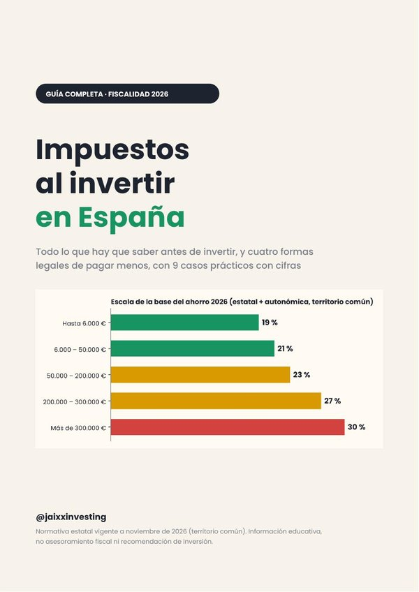
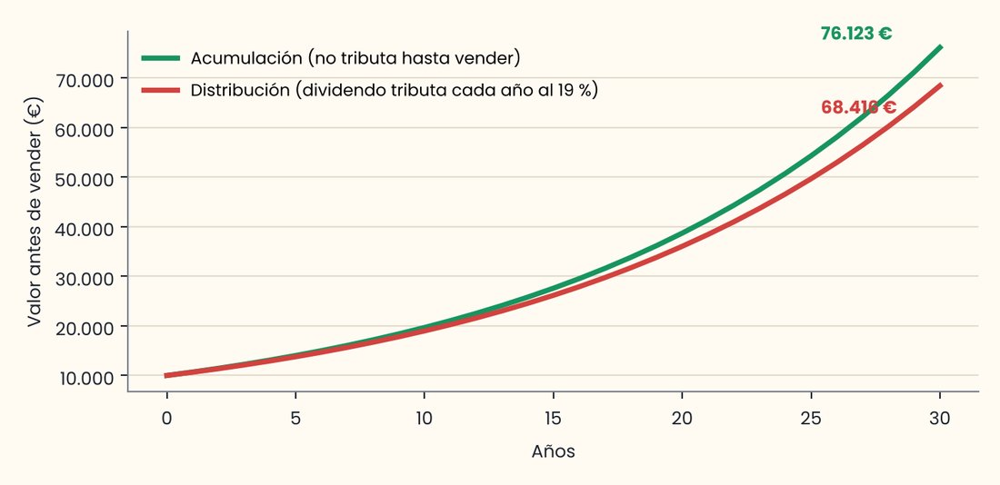
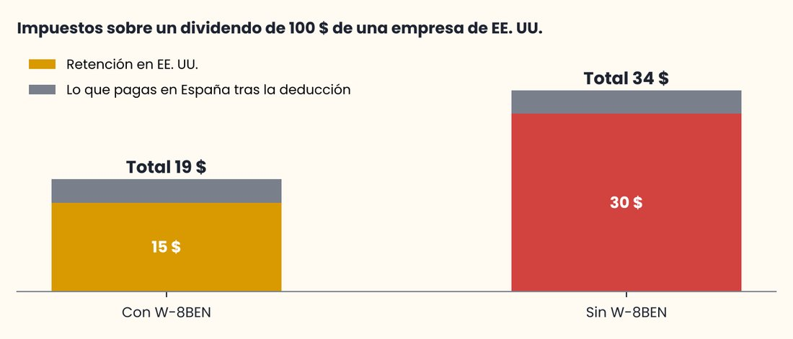

Guía gratuita · Fiscalidad
Impuestos al invertir en España y cómo pagar menos de forma legal
Todo lo que hay que saber antes de invertir: cómo tributa lo que ganas, cuándo tienes que declarar y cuatro formas legales de pagar menos, incluida la nueva cuenta Financia Europa. Con la normativa vigente a noviembre de 2026 y 9 casos prácticos con cifras.
Descargar la guía en PDF
Qué vas a encontrar
- Las dos cajas del IRPF y la escala de la base del ahorro de 2026, del 19 al 30 %, con un ejemplo por tramos.
- Qué tributa y cuándo: ganancias al vender frente a dividendos e intereses al cobrarlos, con una tabla por producto.
- Las retenciones, el caso del bróker extranjero y cuándo estás obligado a hacer la renta.
- Forma 1: compensar pérdidas, el límite del 25 %, los cuatro años, la regla de los dos meses y el FIFO.
- Forma 2: el traspaso entre fondos y la diferencia entre acumulación y distribución a 10, 20 y 30 años.
- Forma 3: la doble imposición de los dividendos de fuera, el W-8BEN y la deducción en la renta.
- Forma 4: plan de pensiones, Plan de Ahorro 5 y la nueva cuenta Financia Europa.
- Modelos 720 y 721, calendario fiscal del inversor, checklist antes del 31 de diciembre y errores frecuentes.
Así se ve por dentro

Acumulación frente a distribución: con 10.000 € a 30 años y un 7 % anual, la diferencia neta es de 2.763 € a favor de la acumulación (cálculo propio).

Un dividendo de 100 $ de EE. UU.: 19 $ de impuestos en total con el W-8BEN firmado y 34 $ sin él.
Los 9 casos prácticos
| Caso | Situación | Resultado |
|---|---|---|
| 1 | Ganancia de 8.000 € en un año | 1.560 € (19,5 % de media) |
| 2 | Vender en pérdidas antes del 31 de diciembre | 380 € menos |
| 3 | Pérdidas sin ganancias ese año | Compensa 250 € y arrastra 1.750 € |
| 4 | Vender y recomprar a los 30 días | La pérdida queda congelada |
| 5 | Venta parcial con dos compras (FIFO) | Tributa 1.500 €, no 500 € |
| 6 | Cambiar de estrategia: ETF frente a fondo | 760 € que siguen invertidos |
| 7 | Dividendo de EE. UU. con y sin W-8BEN | 19 $ frente a 34 $ |
| 8 | Aportar 1.500 € al plan de pensiones | 450 € menos ese año |
| 9 | 30.000 € de ganancia en la cuenta Financia Europa | 3.240 € frente a 6.180 € |